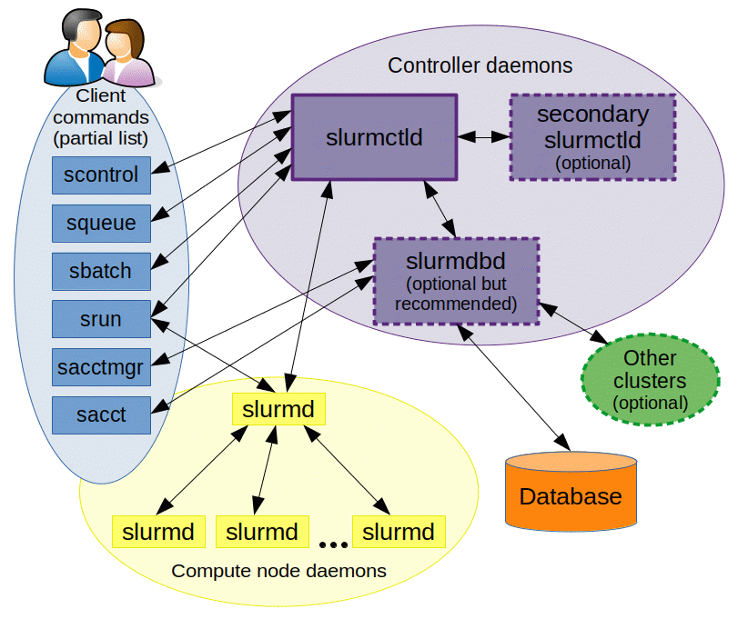
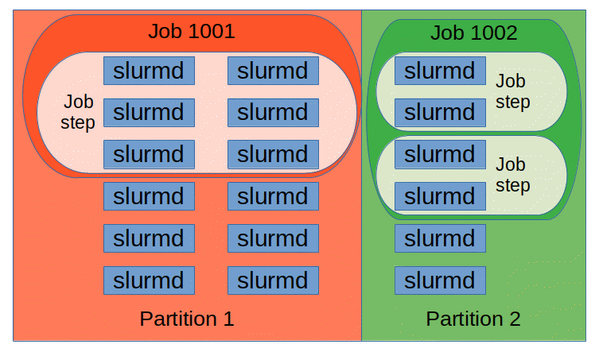

任务调度：Slurm¶
较新版本 Slurm 与 MPI 有兼容性问题尚未解决
请查看 Remove/revise Slurm launch integration - GitHub Issue。
预计问题在 Slurm 24.11 和 OpenMPI 6 中解决。目前，我们将集群中的 Slurm 版本固定在 22.05.11。
Slurm 原理¶
基本架构¶
{kind=link}

Slurm
- 控制节点上运行
slurmctld守护进程，负责接收用户提交的任务，分配资源，监控任务运行状态等。 - 计算节点上运行
slurmd守护进程，负责接收控制节点分配的任务，执行任务，将任务结果返回给控制节点。
{kind=link}

Slurm
Slurm 中包含以下实体：
- 节点（node）
- 分区（partition）：由节点组成。分区可以视为任务队列。
- 任务（job）：由一个或多个步骤（step）组成。
Slurm 要求集群上有一致的用户名和用户组。
其他¶
Slurm 还提供一个 PAM，能够限制无任务用户登录节点。
Slurm 配置¶
配置文件通过 NFS 挂载
Munge 密钥和 Slurm 配置文件等需要同步到集群每个节点。因此我们在根服务器创建 /slurm 目录，设置为只读共享到集群中所有节点。
因为配置文件放置在 NFS，所以需要修改 Munge 和 Slurm 等服务的 .service 文件，将 EnvironmentFile 指向新的地方，并在能够从 NFS 加载配置文件后再启动服务。以 slurmd 为例，关键是添加 remote-fs.target 的依赖，以及使用 ConditionPathExists 条件：
[Unit]
Description=Slurm node daemon
After=munge.service network-online.target remote-fs.target
Wants=network-online.target
ConditionPathExists=/slurm/etc/default/slurmd
[Service]
EnvironmentFile=-/slurm/etc/default/slurmd
# Additional options that are passed to the slurmd daemon
SLURMD_OPTIONS="-vvvvvv"
SLURM_CONF="/slurm/etc/slurm/slurm.conf"
需要注意的是，Slurm 相关命令也从环境变量 SLURM_CONF 中读取配置文件路径，因此需要在 /etc/environment 中添加：
安装 Munge¶
Munge 是一个加密服务，用于集群中相同 UID 和 GID 进程间的认证。
集群在 SSSD 上为 Munge 服务创建了一个非特权的用户账户 munge。应当在完成 SSSD 配置，正确运行后再安装 Munge。
Munge 对权限极为敏感，应按安装指导检查各目录权限：
/slurm/etc/munge：0700/var/log/munge：0700
这些目录的拥有者为运行守护进程的用户，即 munge。
安装完成后，运行 Munge 命令均应使用 munge 用户，即 sudo -u munge /usr/sbin/munged。
配置 Munge¶
在主节点生成密钥，并共享到目录中供其他节点使用：
# 在 /slurm 下创建和 /etc 一样的目录结构
mkdir -p /slurm/etc/default
# 密钥生成到 /etc/munge/munge.key
sudo -u munge /usr/sbin/mungekey --verbose
# 移动密钥
mv /etc/munge /slurm/etc
# 移动默认配置文件
mv /etc/default/munge /slurm/etc/default/munge
# 修改 munge 将 key-file 指向 /slurm/etc/munge/munge.key
# 即：OPTIONS="--key-file=/slurm/etc/munge/munge.key --num-threads=2"
vim /slurm/etc/default/munge
# 配置权限
chown -R munge:munge /slurm/etc/munge
# 修改 munge.service 中的 EnvironmentFile 为 /slurm/etc/default/munge
# 并添加 NFS 依赖和检测
vim /lib/systemd/system/munge.service
# 启用服务
sudo systemctl enable munge.service
# 运行服务
sudo systemctl start munge.service
从节点：
# 修改 munge.service 中的 EnvironmentFile 为 /slurm/etc/default/munge
# 并添加 NFS 依赖和检测
vim /lib/systemd/system/munge.service
# 启用服务
sudo systemctl enable munge.service
# 运行服务
sudo systemctl start munge.service
测试 Munge¶
在任一节点上使用 munge -n 生成一段加密字符串，然后在其他节点上使用 unmunge 解密。
安装 Slurm¶
安装完成后应当会自动生成 systemd unit 文件，完成 slurm.conf 的配置后在不同节点上启动相应的服务：
- 主节点：
sudo systemctl enable slurmctld.service - 从节点：
sudo systemctl enable slurmd.service
配置 Slurm¶
常用的配置项记录如下：
插件¶
task/affinity：用于任务绑核- cgroup 相关
proctrack/cgroup：使用 Linux cgroup 控制任务进程树task/cgroup：使用 Linux cgroup 控制任务能使用的资源（唯一能干这事的插件）jobacct_gather/cgroup：使用 Linux cgroup 收集任务的资源使用情况
cgroup¶
Quote
cgroup.conf 总是应当放置在 slurm.conf 的同级目录下。
Slurm 维护¶
Slurm 常见问题¶
Zero Bytes were transmitted or received¶
一般是 munge 服务未启动或配置错误导致的。检查 munge 服务是否正常运行，以及能否通过解密测试。
Slurm 开发¶
Slurm 作为我们常用的任务调度系统，有必要深入了解其工作原理甚至浏览源码，以便于更好地理解集群管理和并行任务调度系统。